Dealing with Multi-Variable Systems: Identification and Analysis
This demo shows how to deal with data with several input and output channels (MIMO data). Common operations, such as viewing the MIMO data, estimating and comparing models, and viewing the corresponding model responses are highlighted.
Contents
The Data Set
We start by looking at the data set SteamEng.
load SteamEng
This data set is collected from a laboratory scale steam engine. It has the inputs Pressure of the steam (actually compressed air) after the control valve, and Magnitization voltage over the generator connected to the output axis. The outputs are Generated voltage in the generator and the rotational speed of the generator (Frequency of the generated AC voltage) The sampling interval was 50 ms.
First collect the measured channels into an iddata object:
steam = iddata([GenVolt,Speed],[Pressure,MagVolt],0.05);
steam.InputName = {'Pressure';'MagVolt'};
steam.OutputName = {'GenVolt';'Speed'};
Let us have a look at the data
plot(steam(:,1,1))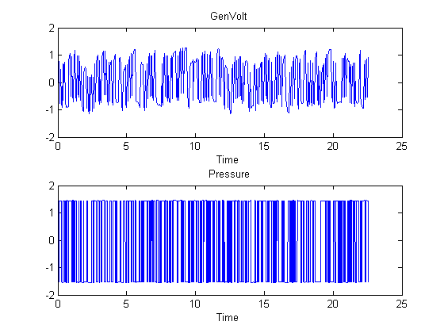
plot(steam(:,1,2))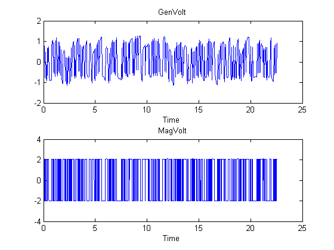
plot(steam(:,2,1))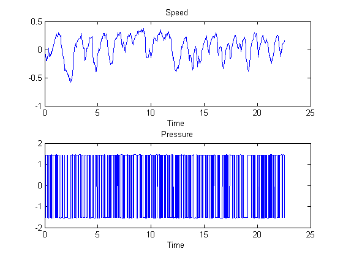
plot(steam(:,2,2))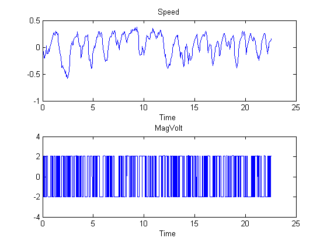
Step and Impulse Responses
A first step to get a feel for the dynamics is to look at the step responses between the different channels:
ms = step(steam); step(ms)

Responses with Confidence Regions (3 s.d.)
To look at the significance of the responses, the impulse plot can be used instead, with confidence regions corresponding to 3 standard deviations:
impulse(ms,'sd',3)
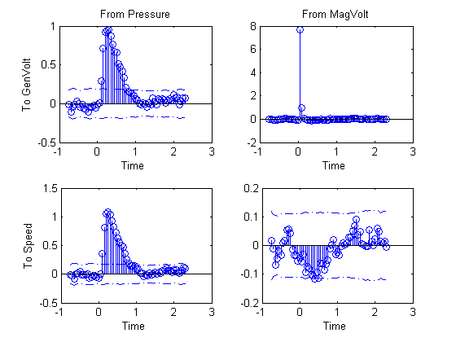 Apparently the response from MagVolt to Speed is not very significant (Compare the y-scales!) and the influence from MagVolt to GenVolt has not much dynamics, just a delay.
A Two-Input-Two-Output Model
A quick first test is also to look a a default state-space prediction error model. Use only the first half of the data for estimation:
mp = pem(steam(1:250))
State-space model: x(t+Ts) = A x(t) + B u(t) + K e(t)
y(t) = C x(t) + D u(t) + e(t)
A =
x1 x2 x3
x1 0.13663 -0.11647 0.031018
x2 -0.018116 0.99119 -0.21954
x3 0.062284 0.19376 0.68313
B =
Pressure MagVolt
x1 -0.00035013 -0.03543
x2 0.0012629 0.00015516
x3 -0.027068 0.004312
C =
x1 x2 x3
GenVolt -10.888 1.5597 0.063506
Speed 0.03383 3.3192 0.035074
D =
Pressure MagVolt
GenVolt 0 0
Speed 0 0
K =
GenVolt Speed
x1 -0.0032652 -0.023505
x2 0.06212 0.17101
x3 0.15329 0.029301
x(0) =
x1 -0.056781
x2 -0.03411
x3 0.03002
Estimated using PEM using SearchMethod = Auto
Loss function 3.18517e-006 and FPE 3.72028e-006
Sampling interval: 0.05
Compare with the step responses estimated directly from data:
step(ms,'b',mp,'r',3) % Blue for direct estimate, red for mp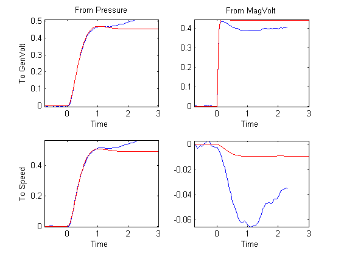
The agreement is striking, except for MagVolt to Speed, which anyway is insignificant.
To test the quality of the state-space model, simulate it on the part of data that was not used for estimation and compare the outputs:
compare(steam(251:450),mp)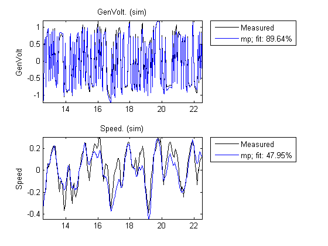
The model is very good at reproducing the Generated Voltage for the validation data, and does a reasonable job also for the speed.
Spectral Analysis
Similarly, comparisons of the frequency response of mp with a spectral analysis estimate gives.
msp = spa(steam);
bode(msp,mp)
bode(msp(1,1),'b',mp(1,1),'r')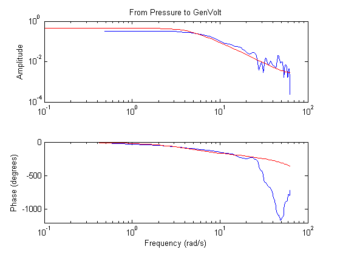
bode(msp(1,2),'b',mp(1,2),'r')% Press Return for next I/O pair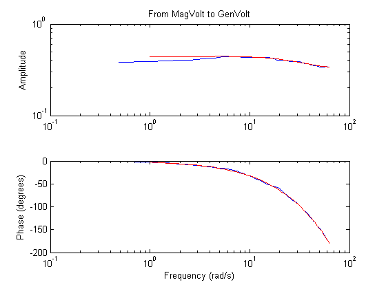
bode(msp(2,1),'b',mp(2,1),'r')% Press Return for next I/O pair

bode(msp(2,2),'b',mp(2,2),'r')% Press Return for next I/O pair.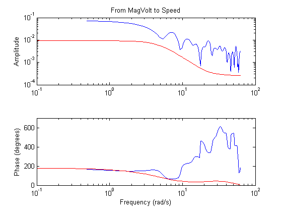
As before the response from MagVolt to Speed is insignificant and difficult to estimate.
Single-Input-Single-Output (SISO) Models
This data set quickly gave good models. Otherwise you often have to try out submodels for certain channels, to see significant influences The toolbox objects give full support to the necessary bookkeeping in such work. The InputNames and OutputNames are central for this.
The step responses indicate that MagVolt primarily influences GenVolt while Pressure primarily affects Speed. Build two simple SISO model for this:
m1 = armax(steam(1:250,'Speed','Pressure'),[2 2 2 1]); m2 = armax(steam(1:250,1,2),[2 2 2 1]); %Both names and numbers can be used
Compare these models with the MIMO model mp:
compare(steam(251:450),m1,m2,mp)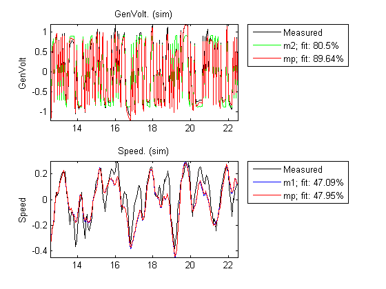
nyquist(m1,m2,mp,'sd',3) % m1 is blue, m2 is green and mp is red. Note that the sorting is automatic. mp describes all input output pairs, while m1 only contains Pressure to Speed and m2 only contains MagVolt to GenVolt.
nyquist(m1(1,1),'b',mp(2,1),'r','sd',3) nyquist(mp(2,2),'r','sd',3)% Press Return for next I/O.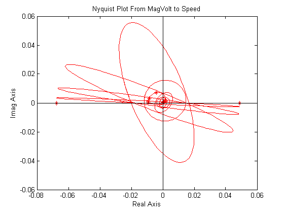
This is the input-output pair that has insignificant dynamics.
nyquist(mp(2,1),'r','sd',3)% Press Return for next I/O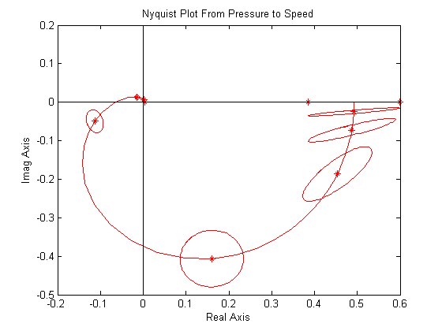
nyquist(m2(1,1),'g',mp(1,2),'r','sd',3)% Press Return for next I/O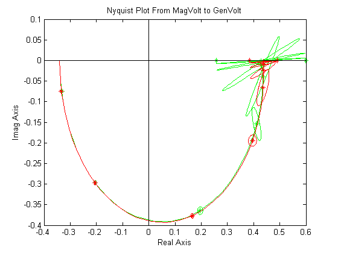
The SISO models do a good job to reproduce their respective outputs.
The rule-of-thumb is that the model fitting becomes harder when you add more outputs (more to explain!) and simpler when you add more inputs.
Two-Input-Single-Output Model
To do a good job on the output 'GenVolt', both inputs could be used.
m3 = armax(steam(1:250,'GenVolt',:),'na',4,'nb',[4 4],'nc',2,'nk',[1 1]); m4 = pem(steam(1:250,'GenVolt',:)); compare(steam(251:450),mp,m3,m4,m2)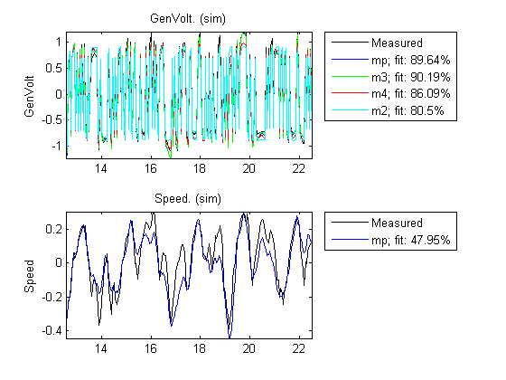
About 10 % improvement was possible by including the input Pressure, compared to m2 that uses just MagVolt as input.
Merging SISO Models
If desired, the two SISO models m1 and m2 can be put together as one 'Diagonal' model by first creating a zero dummy model:
mdum = idss(zeros(2,2),zeros(2,2),zeros(2,2),zeros(2,2)); set(mdum,'InputName',get(steam,'InputName'),'OutputName',get(steam,'OutputName')); mdum.ts = 0.05; m12 = [idss(m1),mdum('Speed','MagVolt')]; % Adding Inputs. % From both inputs to Speed m22 = [mdum('GenVolt','Pressure'),idss(m2)]; % Adding Inputs. % From both inputs to GenVolt mm = [m12;m22]; % Adding the outputs to a 2-by-2 model. compare(steam(251:450),mp,mm)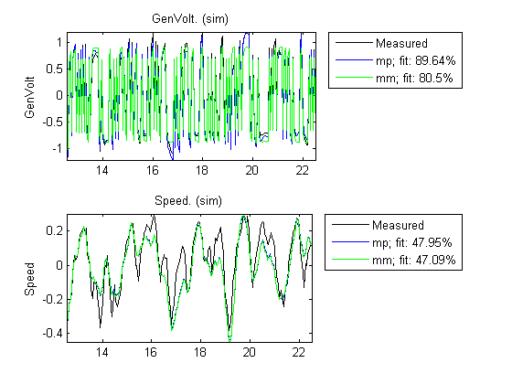
Clearly the "Diagonal" model mm performs like m1 and m2 in explaining the outputs.
Additional Information
For more information on identification of dynamic systems using System Identification Toolbox™ visit the System Identification Toolbox product information page.